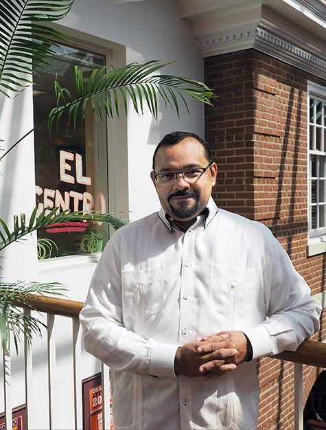

About the course
Visual Media is about the visual communication techniques utilized in today's society. In this course, I have learned how to use Adobe photoshop, InDesign, and Premier. On top of that, I am learning how to build my own website. The purpose of the course is to introduce students to the digital tools used in the field of communications. By having students work with professional programs gives them a broad skill set. Students that have experience with multiple advanced programs have an advantage over other who have only used one. The projects I have completed in this class have given me a collection of skills will further help me excel in my future outside college.
My Professor
My professor for this class is Dr. Carlos Evia. Dr. Evia received his MSC from the Universidad LaSalle in Mexico City and his LCC from the Instituto de Ciencias Sociales De Merida in Yucatan, Mexico. Along with that, he attended Texas Tech University, getting his PhD. He currently works in the Communications Department at Virginia Tech as a Professor. Dr. Evia has served on the Lightweight DITA Subcommittee, the Darwin Information Typing Architecture Technical Committee, the Society for Technical Communication, the Virginia Tech Center for Human-Computer Interaction, and the Virginia Tech Hispanic/Latin Faculty and Staff Caucus. Being an involved individual in the Virginia Tech community, he has also received awards for his hardwork and commitment to the University. Dr. Evia was awarded the Frank R. Smith Award for Distinguished Article in the Journal Technical Communication in May 2017 and was honored with Outstanding Faculty Outreach with the Virginia Tech College of Liberal Arts and Human Sciences in May 2011. Dr. Evia is a husband and father to the cutest little girl you’ve ever seen named Sophia. One aspect about him that is evident from day 1 in his class is his love for monkeys. This is clear as he enjoys bringing them up in class as examples for the projects his class is working on at the moment. He is a successful individual who is still committing his time and services to Virginia Tech to further advance the prosperity of the university.
My Opinion
Going into Visual Media, I did not know what to expect. I simply thought I would be learning about how pictures and video are used to convey a message to the public. This course has allowed me to use interfaces I never dreamed of going near. InDesign for example, is not my cup of tea, but I am glad I had the opportunity to learn how to use it. Personally, I enjoy creating videos and editing them together. However, I whenever I opened Adobe Premier I was overwhelmed and did not know where to start. Visual Media introduced Lynda tutorials that gave me the base I needed to work with Premier, While I am still an ameature with the Adobe programs, I am more experienced with them now, and I am thankful for that. Even though I will probably not use InDesign or github again, I am glad that I have the chance to use them. A big reason into why I have enjoyed this class is because of Dr. Evia’s reassuring and light presence in the classroom. He is fully aware that students are not experts on all of the areas taught in the course, but he is willing to help students who are confused. Every class, you are guaranteed to laugh as he is humorous and is able to create a fun environment to work in. The course has not been what I originally expected, but I am thankful for all the course has taught me.
